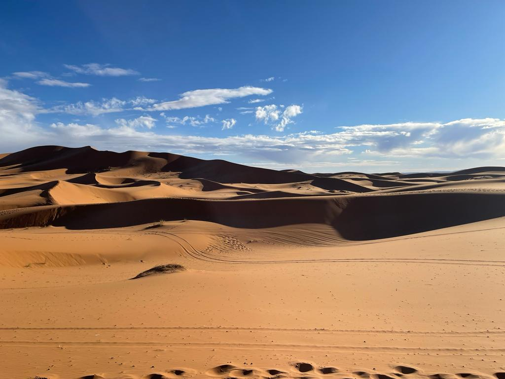

Marruecos
Tuve la oportunidad de este año ir a marruecos. Fui en Enero, y fue un pais que me llamo mucho la antencion por varias razones. En primer lugar, todo es islam, es una religion que predomina mucho. La moneda nacional son los Dirhams. Cada Dirham vale 20 pesos aproximadamente. Y como se puede ver en esta foto estaba muy feliz montado en un camello.
El clima estaba helado, uno pensaria que por ser desierto seria caliente. No, en el dia estaban a 10 grados y en la noche llegamos a -18. El aire que se respira ahi es un aire muy limpio. Casi no se tiene civilizacion pero curiosamente si teniamos 5G en medio de la nada. Para llegar al desierto se hace como 2 dias de la capital en camion. Lo bueno es que me fui con varios compañeros del TEC por que estabamos de Eurotrip y fuimos con guias y en grupo. Por ello, estuvo bien.

Aqui ando bien feliz con mi compadre de la fruta. Esto fue en el centro de marruecos. Su capital Marrakech. Si es algo exotico ya que me senti como en una pelicula de indiana jhones. Obvio, se me olvido mencionar que el cabron me cobro por la foto, pero bueno, no me arrepiento.

Para meterte al desierto, te tienes que ir en camello. Es algo que realmente es muy dificil de explicar. Por que son horas a camello y llegas a la mitad del desierto. Ahi tienen un campamento donde pasas la noche y ves las estrellas. Realmente es algo impresioannte. Si tenia la duda profe el camello vale como 30 K.